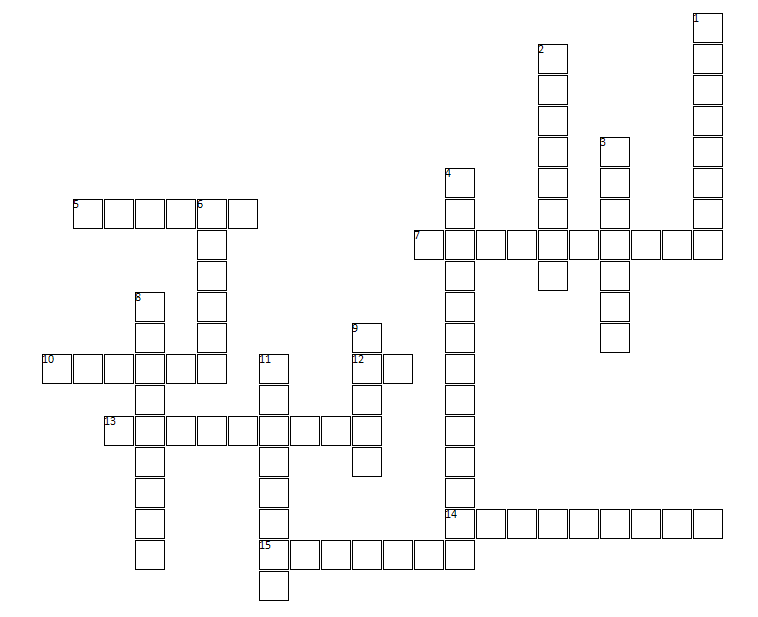
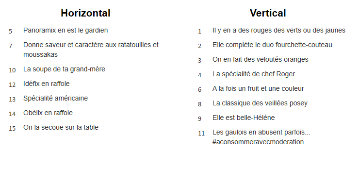

Déroulement :
Bienvenue dans les mots fléchés culinaires de moyen chef ! Voici une grille vide avec des définitions, à toi de retrouver et compléter les cases.
 Pour finir :
Si tu as trouvé sans trop de difficultés, ou si tu as envie d’encore te creuser les méninges alors n’hésite pas à passer au niveau encore supérieur “grand chef” !